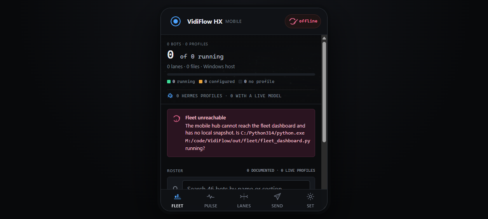
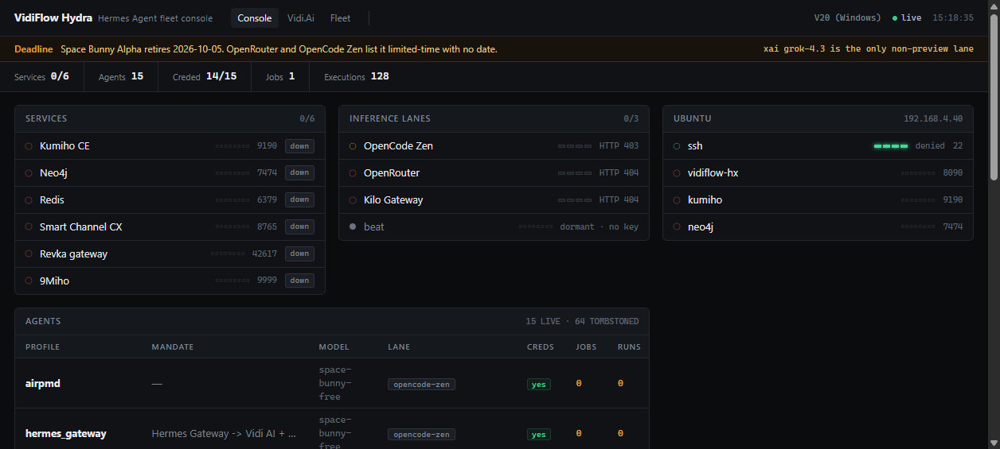
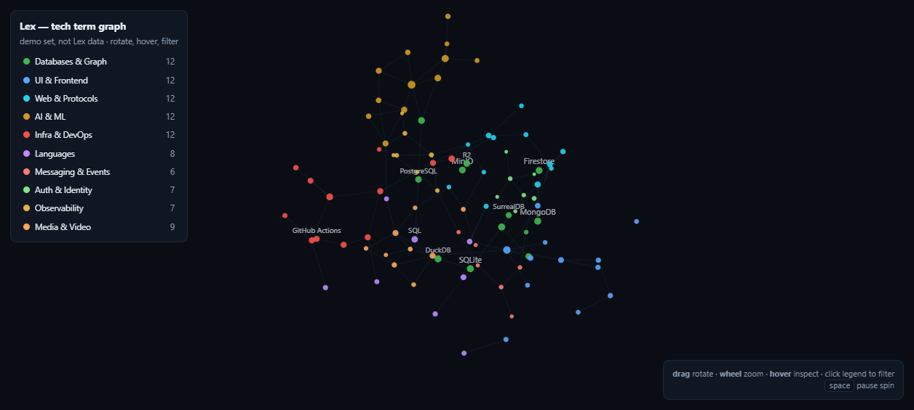

Smart Channel CX — Smart Stack
The video pipeline on the kanban orchestrator, plus the screen-check of every preview server running on this machine. Restyled on the Linear design system; imagery generated locally on Mage-Flow.
Kanban video orchestrator
Plan: _kanban_video_orchestrator.mdplanning
Every step of a video job — brief, prompt, generate, compose, timeline, render, review, deliver — becomes a kanban card. Hermes' existing kanban engine already has claiming, retries, heartbeats, parent/child task trees and an event log, so the video stack only supplies job types. This is also the observation layer: one board shows the state of every job, which is what's missing today.
Brief
Generate
Assemble
Deliver

Image stack — verified
| Model | Role | Time | License | Text render |
|---|---|---|---|---|
| Mage-Flow Turbo | primary generator | 4–12 s | MIT | 6/6 perfect |
| Z-Image-Turbo | stylised | 10–18 s | Apache-2.0 | — |
| FLUX.2 klein 4B | prompt adherence | 8–52 s | Apache-2.0 | strong |
| HiDream-O1 dev | long-text | 6–36 s | MIT | author-reported |
Screen check — 2026-10-07
Every preview server that was running got captured,
checked for blank captures, and filed under out/screens/. Seven of eight rendered real content;
8833 vidimodels is a Vite/React shell served by a static server, so it renders an empty
#root — it needs its dev server, not http.server.


Lex — 3D term graph
Demo shipped: lex-graph-3d-demo.htmlinteractive
100 tech terms, 10 colour-coded categories, ~110 real relationship edges, force-directed in 3D. Hover for neighbours, click legend rows to filter, drag to rotate. Open it →

vidismart/lex/app is empty — so this is the spec, not the product.Storage reality check
It's markdown files, not a databasethe gap
Skills: 103 + 64 plain SKILL.md files. Memory: MEMORY.md / USER.md.
No index, no vectors, no edges — which is why nothing can show relationships between skills today.
The Neo4j graph (stopped, data intact) is the candidate store when the memory architecture is decided.